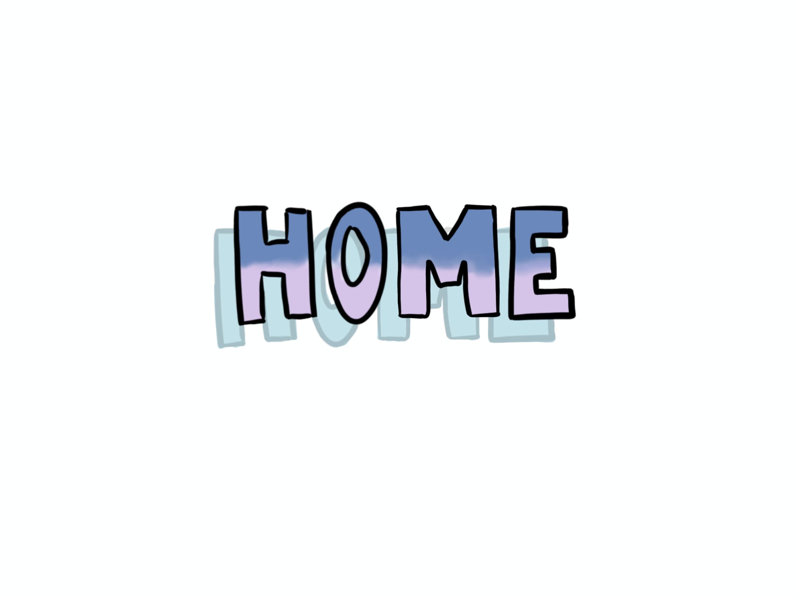
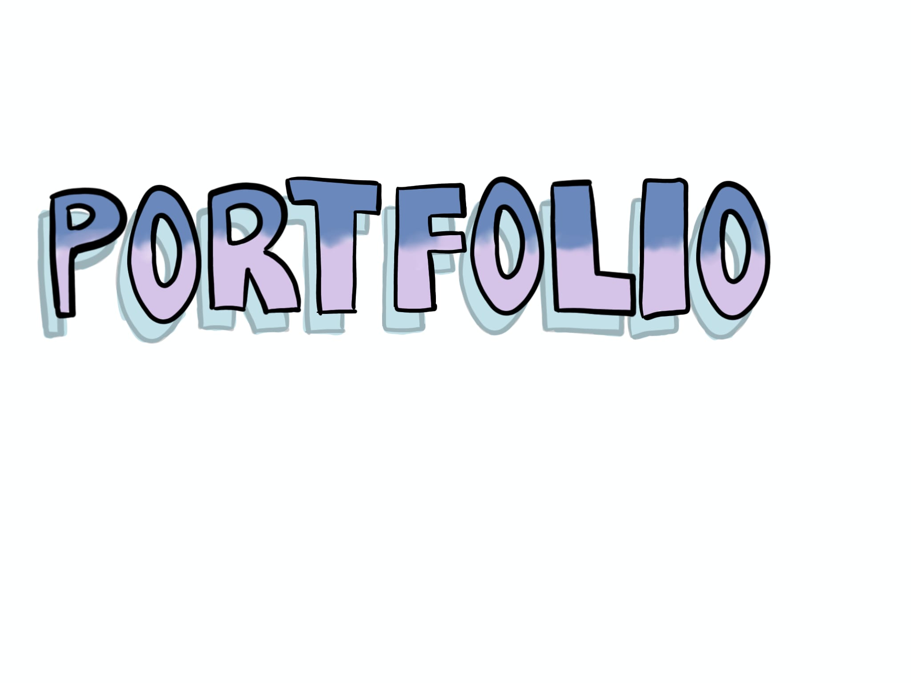

Hello, I'm Marta Almeida (Lisbon, 2005). I'm a Multimedia and Visual Artist based in Portugal.
I'm currently completing my third year of a degree in Fine Arts and Multimedia at the University of Évora. My artistic work stems from my academic background and the various areas of multimedia I have explored, fusing digital and visual art in every project.

My artistic work stems from my academic background and the various areas of multimedia I have explored, including audio and video editing, photography (on a personal level), 2D and 3D animation, stop motion, and 3D printing.




My Room
In this exercise, the goal was to create a 3D environment in Blender that represented "my room." For this project, I opted for a simpler and more delicate approach. The modeled room is a small representation of how I idealize my personal space, a reflection of my tastes and preferences.


Cybercity
The main character appears in a futuristic city, wandering through buildings and observing the environment. This journey is portrayed through a subjective perspective (POV), interspersed with wide shots of the urban landscape.
The aesthetics were influenced by the Cyberpunk 2077 universe, particularly in terms of the density of buildings, artificial lighting, and the feeling of intense urbanization.